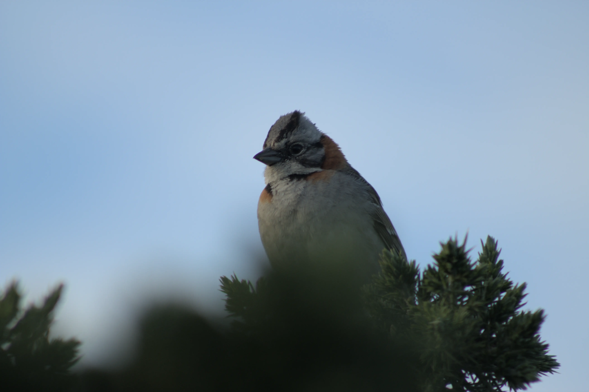
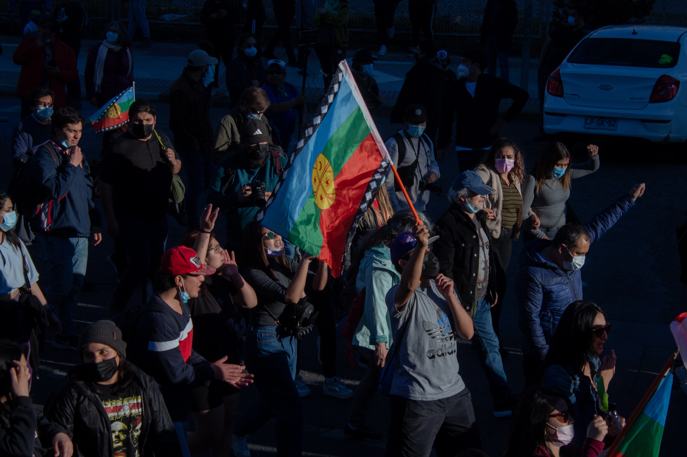
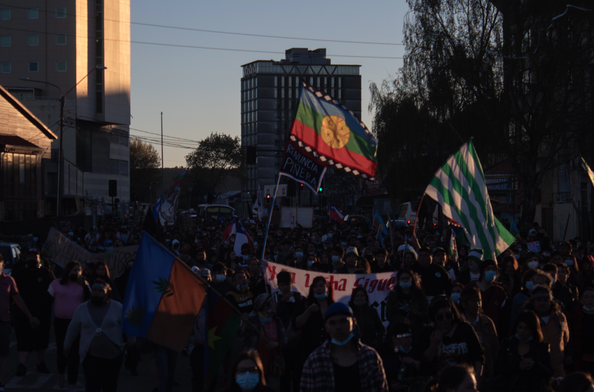

Portafolio




Fotógrafo y estudiante de diseño, con interés en la fotografía documental y de prensa. Me motiva crear imágenes con sentido, conectadas al territorio y a las historias reales del sur. Busco construir lazos con otras artistas y habitantes, impulsando colaboraciones que entrelacen arte, comunidad y memoria.
Experiencia en fotoprensa.
Experiencia en manejo de camaras para documental.